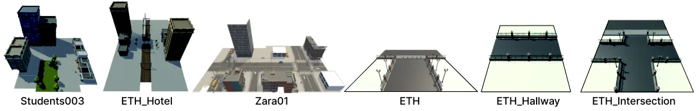
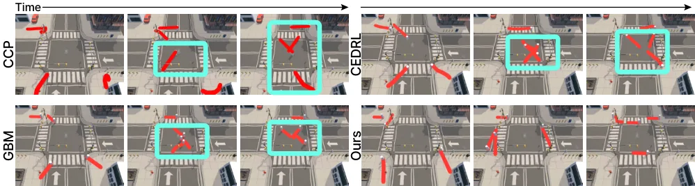
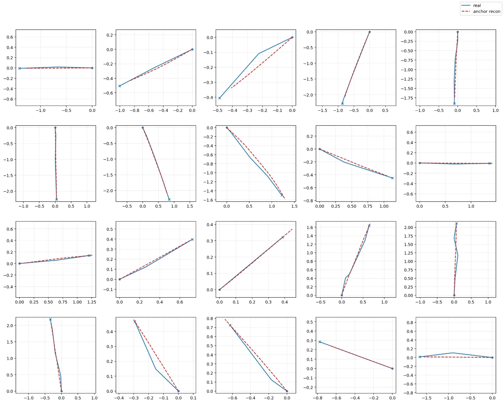
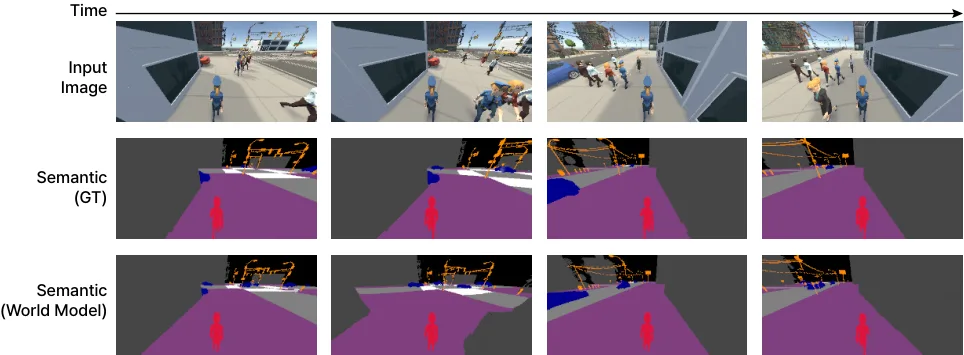
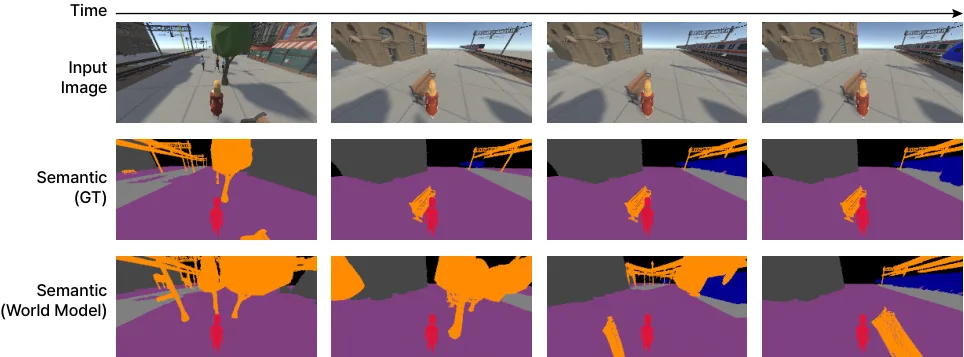

Seeing Beyond the Next Step：把世界模型降级为训练期偏好预言机，导航违规率降一个数量级、推理仍是单次前向
Seeing Beyond the Next Step: World-Model-Guided Human-Like Navigation in Multi-Agent Scenes
先验：Qwen3-VL-2B-Instruct + LoRA 在 100 条 k-means 运动锚点上做分类（20 帧片段、25 FPS、40 维位移），得人类化动作流形。精化：冻结的两个世界模型分别预测“谁往哪走”（相对位移+速度+方向余弦项，位置 ADE 0.18 m、朝向误差 20.8°）与“场景能让出什么”（EDM 去噪预测导航语义分割，行人像素置 ignore，mIoU 87.0%）；10 个候选（top-5 + 随机 5）按目标进度/平滑/当前风险/未来风险/语义合法性打分，用 GRPO 把组内相对偏好蒸馏回策略。部署只剩 65 ms 单次前向：Zara01_Group 上 GSR 38.9→77.8、SRVR 17.4→1.2，五个场景全部最优。
GSR on Zara01_Group
SRVR
per-decision latency
作者、单位与技术谱系 · Research context
作者与单位
研究脉络
- Qwen3-VL-2B-Instruct方法基座关系：提供视觉-语言先验，本文用 LoRA 把它改造成 100 类锚点分类器，而不是端到端重训策略[论文 Appendix A]
- 世界模型作为在线规划器（PlaNet/Dreamer 谱系）范式上游关系：把世界模型用于想象 rollout 来规划或优化策略；本文保留其“后果预测”内核但改变使用位置（训练期而非推理期）[论文 §2 相关工作中的技术谱系]
- GRPO（组相对策略优化）训练接口上游关系：提供“组内相对优势、无需 critic”的优化器，本文直接把它当作把打分器偏好压进策略的蒸馏通道[论文 §3.3]
- ETH/UCY + Unity 重建评测评测基座关系：沿用经典人群轨迹数据集的场景与轨迹，但重建为可闭环交互的 Unity 环境，使 GSR/SRVR 可测[论文 §4.1]
合作网络
- Korea University × NC AISeong-Eun Hong / JuYeong Hwang / Jinhyun Kim / HyeongYeop Kang（Korea University） → Hanyoung Jang（NC AI，ncsoft.com）关系：共同署名（高校—产业联合）[论文首页署名与邮箱]
- 共同第一作者关系Seong-Eun Hong → JuYeong Hwang关系：共同第一作者（∗Equal contribution）[论文首页脚注]
- 项目页与代码入口Seong-Eun Hong（个人 GitHub Pages） → Seeing Beyond the Next Step 项目页关系：官方项目页（署名第一作者维护）[论文摘要中的项目页链接]
- 资助关系IITP（韩国 MSIT） → Korea University 作者群关系：项目资助（公开致谢）[论文致谢]
作者单位、共同第一作者、通讯作者与资助信息取自论文首页与致谢；单位—作者关系为公开署名事实。项目页归属按域名与第一作者邮箱前缀对应，属有来源的推断；导师/师生关系论文未声明，不写。
方法本质拆解 · What actually changed
是不是微调？
是两段式微调，不是从头训练。第一段把 Qwen3-VL-2B-Instruct 冻住，只训 LoRA（rank 64、α=16）与分类头，10 epoch、lr 3e-5、批 32；第二段在同一 checkpoint 上继续用 GRPO 训 10 epoch、lr 2e-5。两个世界模型是独立预训练后冻结的，不参与策略更新；训练数据为 ETH_Hotel、Zara01、ETH、Students003 四组 ETH/UCY 轨迹在 Unity 中的重建。
有没有额外约束？
三道约束。动作侧：输出被限制在 100 条示范聚类锚点的离散集合上，等价于硬约束动作必须落在人类示范流形内。预测侧：状态分支除 L2 之外加了方向余弦项 (1−cos(û,u))，专门约束“谁朝谁走”这一关系；语义分支在真值里把行人像素置 ignore，约束模型只学生态布局、不学瞬态占用。奖励侧：五个分量全部尺度归一化、单位权重，没有学出来的权重。
推理/后端到底做了什么？
推理只有一步：把第三人称 RGB 与结构化上下文（自车状态、目标、7 m 内行人、15 m 内动态物体）拼进固定 prompt，Qwen3-VL-2B 前向一次，在 100 个锚点上取 argmax，输出被约束成单个整数索引，耗时 65 ms。没有 rollout、没有候选打分、没有 MPC、没有后处理平滑。世界模型、候选组构造与打分函数在部署时全部丢弃。
方法本质是什么？
本质是把“前瞻”从推理期成本转成训练期监督：世界模型不再模拟未来，只对给定候选锚点回答一个窄问题（人会往哪走 / 这块地能不能踩），由此产生的组内相对排序被 GRPO 压进分类头。它改变的不确定性是“同一时刻多个局部可行动作之间该选哪个”，靠的是把后果差异变成训练信号；没有改变的是策略接口（仍是单次前向选一个锚点），也没有解决长程效应与词表外动作。
输入是第三人称 RGB + 结构化近邻状态 + 语言式 prompt，改动位置在训练目标（从模仿学习换成后果加权偏好），约束是 100 锚点离散词表与行人 ignore 的语义目标，直接效果是推理端只剩 65 ms 单次前向而违规率降一个数量级。

桥接价值Bridge
桥接价值
这篇对状态估计的意义在于它把“预测”从在线回路里拿出来，放进训练回路，并用一个可测的指标证明这样做不掉性能：在线跑两个世界模型（OnlineWM）得 80.6% GSR / 3.2% SRVR，蒸馏后的策略 77.4% / 4.0%，但每决策 65 ms 对 1.2 s。对做实时融合的人来说，这是一个可以直接照搬的取舍模板——凡是“需要未来信息但算不起”的环节（动态障碍预测、可观测性预判、退化检测），都可以先离线把它做成打分器，再蒸馏成一次前向的判别头。第二个桥接点是它的双分支拆法：把未来预测按“谁会动”与“场景能让出什么”拆开，正好对应状态估计里“动态目标状态”与“静态地图/可通行性”的分离，而行人像素在语义目标里置 ignore 这一手，等价于在地图维护里显式剔除瞬态遮挡物。
方法与模块Method
方法摘要
两段式：第一段把 Qwen3-VL-2B-Instruct 用 LoRA（rank 64、α=16、dropout 0.05）适配成 100 类运动锚点分类器，锚点由训练轨迹 20 帧片段（25 FPS、步长 10）在 40 维位移空间做 k-means 得到，监督目标是离真实未来最近的锚点，10 epoch、lr 3e-5。第二段冻结两个世界模型，对每个观测构造 10 个候选（策略 top-5 加随机 5），用 r = 目标进度 − 平滑惩罚 − 当前交互风险 − 预测未来风险 + 语义合法性 打分，再用 GRPO 更新策略 10 epoch、lr 2e-5。世界模型本身是任务对齐的窄预测器而非照片级生成器：状态分支输出每个近邻的相对位移、下一帧速度与方向余弦；语义分支是 EDM 条件去噪器，只预测 7 类导航语义，且把行人像素设成 ignore 标签。
可迁移模块
模块一：固定词表 + 分类头。把连续动作空间离散成 100 条由示范聚类得到的短轨迹，既保证候选落在人类化流形上，又让“给候选打分再排序”变成可计算的分类问题；对状态估计的类比是“把连续残差/模式选择离散成有限假设集”，便于做打分与拒绝。模块二：瞬态目标从静态目标里剔除。语义分支在真值里把行人置 ignore，强迫它预测被人临时遮挡的环境布局，这一条可以直接搬到动态 SLAM 的静态地图维护：移动物体不参与静态层监督，但保留在输入里。模块三：混合候选组（top-5 + 随机 5）。纯利用会让候选彼此太像、梯度退化（Zara01_Group GSR 14.8），纯探索又引入无关候选（交叉口 44.4），这个 5+5 的比例是可复用的经验值。

证据Evidence
关键证据与数字
闭环（Table 1，五场景各三 seed）：Zara01 72.2% GSR / 7.0% SRVR（基线 GBM 55.6/21.0）；Zara01_Group 77.8/1.2（GBM 38.9/17.5，SRVR 从次优 17.4 降到 1.2，约一个数量级）；Students003 66.0/7.2（GBM 64.0/15.2）；ETH_Intersection 83.3/3.9（GBM 72.2/23.5）；ETH_Hallway 87.5/0.9（GBM 68.8/9.3）。消融（Table 2）：去掉双世界模型平均 GSR 77.4→37.3、SRVR 4.0→19.5；单删状态分支在 ETH_Intersection 83.3→51.9，单删语义分支在 ETH_Hallway SRVR 0.9→13.7。世界模型自身精度：语义分支 87.0% mIoU、99.3% 像素准确率，状态分支 0.18 m 位置 ADE、20.8° 朝向误差。效率：部署策略 23.6 TFLOPs / 65 ms 每决策，语义分支 31.1 TFLOPs / 0.115 s、状态分支 6.8 GFLOPs / 1.9 ms（仅训练期）。人评：20 人 7 点量表总分 4.94±0.44 vs GBM 3.19、CCP 3.54、CEDRL 3.14，Friedman χ²(3)=20.84，p<.01。
边界与下一步Limits & Next Step
边界与风险
作者明确承认四条：动作空间被 K=100 固定词表锁死，词表外的运动只能被近似；世界模型只做单次锚点条件预测，抓不住延迟让行、数秒后的群体重组这类长程效应；两个世界模型冲突时按单位权重相加，没有仲裁规则；全部闭环结果来自 ETH/UCY 的 Unity 重建，未在真机上验证传感器噪声、定位误差与执行延迟。我们额外记两条待核验：其一，65 ms 与 1.2 s 的测量硬件未在正文说明（Appendix J 只给了 TFLOPs 与时间），跨平台比较需谨慎；其二，SRVR 依赖仿真给出的语义真值，真机上“语义合法性”本身要靠预测器提供，而语义分支 mIoU 87.0% 是在同分布场景上测的，换到新场景（ETH_Hallway/ETH_Intersection）的语义精度没有单独报告，这决定了该方法能否离开仿真。
下一步实验
第一步，把“训练期打分 + 单次前向”搬到自己的融合回路：用离线真值（后处理轨迹或高精度参考）给候选状态更新打分，把分数蒸馏进实时滤波器的可靠性判定头，对照实验只需比较“在线多假设 rollout”与“蒸馏判别头”的耗时与精度差，指标沿用 GSR/SRVR 式的“任务成功率 + 违规率”二元组。第二步，验证“瞬态目标置 ignore”对静态地图的收益：在同一段数据上分别用“包含动态物体”和“动态物体 ignore”的监督训练静态层，比较静态地图在动态区域的残差与后续定位漂移。第三步，压力测试词表假设：把 K 从 100 调到 30/300，观察成功率是否对动作离散化敏感——如果敏感，说明该方法依赖示范覆盖度而非推理能力，迁移到新场景前必须先重建词表。







